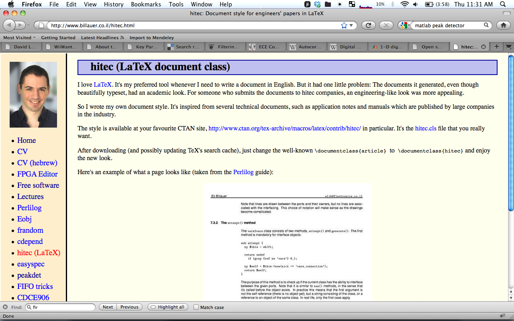

Table of Contents
LaTeX Notes
11/2/11
9/2/11
4/13/11
LaTeX Notes
EXCELLENT FREE TUTORIALS (latex ones first, includes graphing)
here
Guide to LateX
book that Nace recommended (other than Omnigraffle for Mac)
Making good looking and easy trees/graphs:
http://tex.stackexchange.com/questions/161231/how-can-i-produce-this-tree-diagram-in-latex
11/2/11
Great resource for references at
NASA Goddard website
9/2/11
Need to write Latex for 211! Interesting…
Simple homework sample
Nice hw sample
, with boxes around answers.
TeXworks on Mac worked pretty well, and TeXShop is recommended.
LateXLab
is awesome! Kinda want an IDE like that…with auto-insert buttons for easy formulas and stuff.
4/13/11
Lightweight Latex on OS X
Graphics with Latex: PGF and TikZ
LOTS OF GREAT EXAMPLES!!
LaTeX Mathematics
Using (jsmath) plugin for MathJax on DokuWiki currently, trying to get it to align left/right. Fix
here
Another option is
http://mathtran.org/
A different Latex document style (more engineering apparently and less academic)
